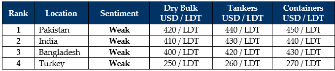

inWeekly Demolition Reports07/07/2025

As we firmly pass the halfway point of 2025, July has continued on with global economies suffering in unison, on the back of erratic trade policies emanatingfrom a White House that seems to have got the car in drive while reversing off a cliff. As Trump fails (as usual) at his ’90 deals in 90 days’ tour, the U.S. sees an unsurprising rise in inflation for the first time in 4 months. This rocked the trading markets to such an extent that not only did the U.S. Dollar shatter international performances going all over the board this week, but it also weakened against the Turkish Lira in a rather unexpected turn of events. Oil futures also continued to hurt as Trump threatens more sanctions against Iran, OPEC+ countries continue to vie for greater market share and affirm an increase in oil putout across July (based on current sentiments), and an ensuing uncertainty that saw oil end the week at USD 66.5/barrel. In keeping with the flow of the money (and expense), the Baltic Exchange recorded another drop this week (in a series of recent declines) that saw it fall 2.1% this week, primarily on the back of the Cape index, which itself fell by about 5.3%, even though the Panamax and Supramax indices rose 1.5% and 0.9% respectively.
This has continued to deliver an absence of recycling tonnage for the markets at the bidding tables, which has represented itself rather well at this week’s anchorages. And speaking of anchorages, recycling destinations have continued to go through a volley of market sentiments amidst their own disjointed market disorders that saw their currencies and steel plate prices dance around. HKC troubles for 1/3rd of the sub-continent recycling destinations has also left ship owners and cash buyers with minimal options to consider, especially as Pakistani authorities have stated that only those yards who have committed to HKC upgrades will be issued provisional DASR certificates to import vessels for recycling in addition to mandatory IHMs, as Bangladeshi HKC recyclers are not only taking the time to get accustomed to the ‘new’ way of recycling, but also digest recently delivered tonnage at a pace and in accordance with the HKC. Indian recyclers, meanwhile, were the only ones to have some positivity with at least one fresh arrival and some positive movement in local steel plate prices. An abundance of HKC ready Alang yards also means that owners looking to take make a quick sale, still do have the option to. But, as the HKC firmly enters into force, recycling markets overall remain on a glum and uncertain footing as demand and prices have slumped alarmingly over preceding weeks and the trajectory doesn’t seem much too different at this time. While recycling tonnage is seeing far lower levels, some exploitative levels have once again been making the rounds as end buyers test the waters to see what might just bite.
Logically, there have been unremarkable sales concluded over the past month and there seem to be chances of fixtures taking place below the USD 400/LDT mark as a poorer condition Handymax bulker was privately concluded in the USD 390s/LDT this week, basis an expected Bangladesh redelivery. There also remains the question of increased regulations and additional documentation required now that the Convention is firmly in effect. Bangladesh will not accept any non-HKC approved recyclers to import vessels. In Pakistan, it is at least encouraging to see the nation’s recycling sector and regulatory bodies / authorities finally moving in the right direction, after years of indecisiveness. In Turkey, as always, other than the Lira, there has been some news.

📄 Download PDF: Ship-recycling-market-insight-Week-07-04-2025-Wiley_July.pdfSource: GMS,Inc.https://www.gmsinc.net/gms_new/index.php/web